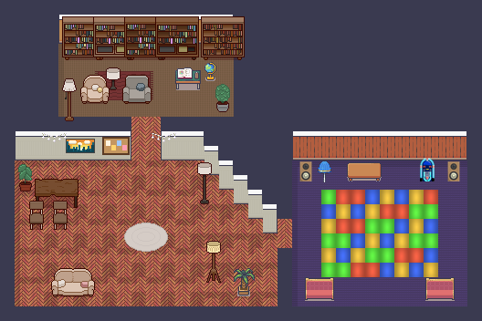
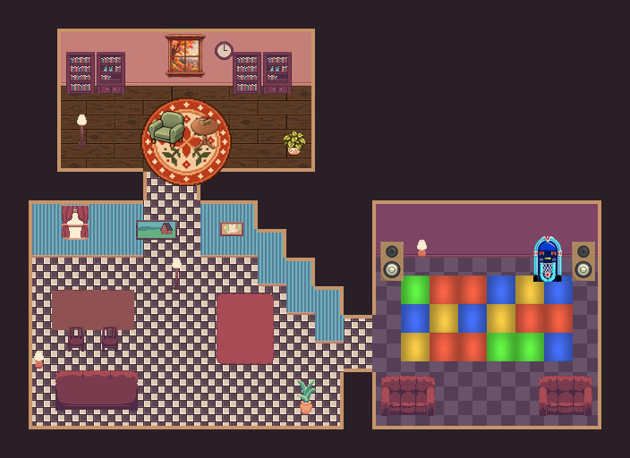
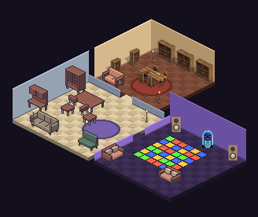

Pick a look
Three ways the new house could look. Each one shows the Great Hall, the Disco and a corner of the Library, at night, with a character you can walk. Open each one on your phone, walk around, then tell Claude A, B or C. Only the look is being chosen here: the room layout, games and voice stay the same whichever you pick.
Decided (18 Oct)
Diesel picked A for now, C as the end goal. The new house is built in A, and built so it can switch to the isometric view later without starting again.

A · Cosy LimeZu+16 px
- Closest to the house you have now: same walls, floors and people.
- Biggest choice of furniture, animals and skins (93 Ninja skins all match).
- Smallest files, so the fastest on phones.
- Least change: it will feel like a refit, not a new house.
Packs: LimeZu Modern Interiors (in the game now), Pixel Interior LRK, Ninja Adventure (CC0), disco floor and ball (CC0).
Walk around A
B · Warm 3232 px
- Chunkier and more detailed, warm wood and red sofas.
- You see fewer tiles at once, so rooms feel bigger and cosier.
- No 32 px people packs yet: the Ninja skins here are just drawn twice the size. Today's characters look tiny (try "Swap character").
- Fewer furniture packs at this size, so more drawing by hand.
Packs: House Interior 32x32 LITE, Cozy Reading Nook (licence unclear: mock-up only), disco floor and ball (CC0), Ninja Adventure (CC0).
Walk around B
C · Isometricangled view
- Looks like a little doll's house: you see the walls and furniture from the side.
- Walking with arrow keys feels odd (doors are on the diagonals).
- Hardly any iso people or animal packs: the skins don't match.
- The map, walls, doors and game spots would all need rebuilding: by far the most work.
Packs: Tiny Interior Decoration by lumeish (CC-BY-SA: credit needed), Kenney Isometric Library (CC0), disco floor and ball (CC0).
Walk around CStill open
- People: move everyone to the Ninja Adventure style (one consistent look, 93 skins), or keep today's characters as their own group in the picker? Everyone keeps the character they have now either way.